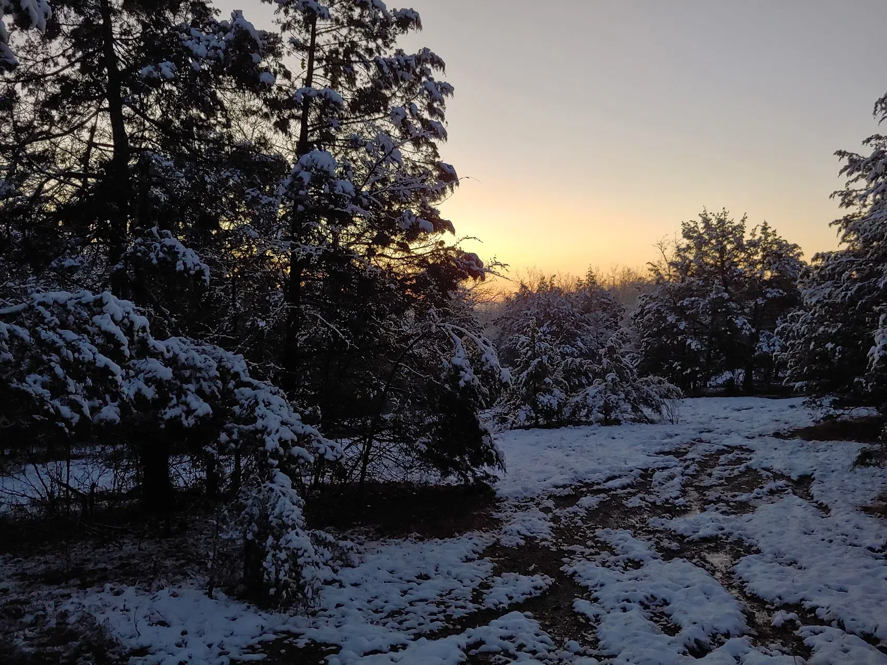

Do I dare make a post referencing occult, esoteric, and folklore tones? It surely would be a stark difference from my usual poetic, philosophical, or metaphorical posting style I have grown into. Not for the sake of mania induced grandiosity nor euphoria, nor for psychosis, but for my own exploration and unraveling! Ah where do I even begin... I suppose I will start with my Death/NDE at the end of 2018. Tldr, wrecked an ATV at 50mph, no protection and slammed my head into the road. That sound of grinding.... Anyway, yeah, after the momentum stopped, I was there above my body. Everything in a blueish-grey hue, no sun, no moon, neither day nor night. With a pitch-black, hazy 5'10-6'2 figure standing over me, not out of love, nor malice, but out of Curiosity, yet it seemed attached to me. Was this merely my psyche projecting itself outside of me to protect itself? Was it what one could call a Watcher? I don't think I will find out soon what it was. But I believe that moment in my history was a catalyst for major change, not only within my psyche, but external relationships aswell. My whole perception on life got up-rooted, and especially my perception on Death. I thought differently, I believed differently, my whole personality was different from that moment. For the longest time I thought I was cursed as I have felt wrong, something didn't add up, everything felt, fake since. Until recently! Weirdly enough, it really feels like 2017 again. Or well, its starting to feel like that! It has not yet reached a climax. Have I finally physically healed from that accident, or have I gained something once lost? I do not know. But I know this isn't like one of my psychosis or manic episodes, it's not grandious. It's subtle, gentle, a reminder, a beholding. This cool gentle, air about me swirls ever more calmly and I think more coherently and at peace. In these years, 2018-2025 were some of my roughest yet! And also what I call my Dead years as I have had little "good" emotion since 2018... Hell I really didn't have one BPD episode before that wreck, only after is when my emotions became so, intense, and uncontrollable. 2019 was chill, though, as I didn't talk or get involved with anyone! 2020-Early 2025 is when the real rollercoaster happened. The highs, the lows, were so... Grand. Not even in a psychosis/manic sense, I was just on that level emotionally, all while never knowing peace, only chaos, betrayal, missed love, and just general human malice towards me. I genuinely lost who I was after that wreck, after 7 years. I haven't enjoyed movies, games, music, people, or even myself since before the end of 2018... Maybe it was my own betrayal, the introduction of chaotic, incompatible currents (Solomonic/Enochian)... And it took me this long to purge/detox from them. That could also explain this feeling/intimation from an esoteric standpoint. Or maybe, also, my own nervous system is being reset after years of chaotic fight or flight. Maybe my Death was just the initiation, and this Dark Night of the Soul, was the purification. It certainly got rid of my Ego and material longings except for companionship, happiness/joy, and "life". Does the end of early life chapters, really feel so calm? This isn't so grand! It's gentle!
